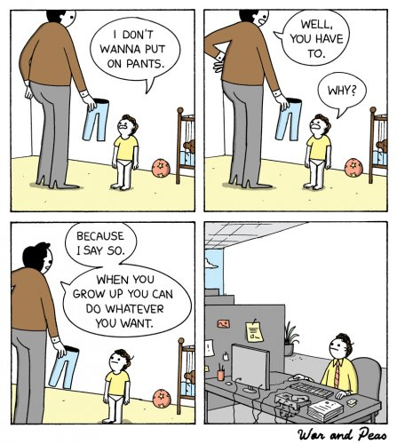

This resistance takes two forms:
1) I want such-and-such to take place in order to be happy, or
2) I don't want what is present and need it to disappear in order to be happy."
--Rupert Spira
“Follow the simple directions.”
--Byron Katie
Years ago, I used to take the words, “Don’t tell me what to do,” very seriously. Because dammit I was a big girl and I knew what was best for me.
But did I though?
LOL
Fast forward to today, where I see a few of my friends, as well as some people around the world, get all worked up over that same idea.
Governments, doctors, teachers, stores, pilots and flight attendants are all telling them what to do.
And by God, it’s an outrage.
As if people giving orders is something new and hasn’t always been the case.
I mean, ever tried not raising your seat-back to its upright position on a descending flight? Yeah good luck with that.
There are rules. Made by others.
Right or wrong, people have to live with their side’s political win or loss, masks or no masks, vaccine or no vaccine, socializing rules, travel restrictions, and let’s not forget, all those other fools who do things differently.
They don’t like it.
And they think that matters.
Despite unending evidence to the contrary.
After all, there have been rules- liked or not- since Neanderthals shared caves.
There have been rules since preschool about having to wear pants, not hitting one’s siblings, eating one’s vegetables, going to bed, not talking back, and just generally, doing what one is told.
As a grown up now, it's just more of the same.
Still, the inability to make existence bend to each one’s particular will seems to make for a lot of outrage.
As if existence itself is supposed to be run by each individual’s personal preferences.
As opposed by the other way around.
Eight billion people having the ”right” to have things their way.
That couldn’t be a problem, right?
And hey, some of these people might even be into nonduality, and oneness, and no-self.
Well, at least until that no-self is told to do something it doesn’t like.
Then, there’s most definitely a self, and there are most definitely others, and if those others are too stupid to want the same thing we do, and seem to also think they have the right to what they want? Well, screw them.
This is an odd kind of freedom.
Because let's face it, this has never been a live or let live world. This is never been a, “Go ahead honey, you just do things your way,” kind of place.
So when anyone thinks their personal freedoms and their liked-happenings are guaranteed,
they are thinking a little crazy.
This does not make for a peaceful life.
In fact, the more someone experiences themselves as an independent doer, decider, master and knower of what should happen- the more despairing and/or angry they will be.
Petulant, obsessed, irrationally raging.
The intensity of those feelings betraying how off such thinking actually is.
Because no individual has ever had rights of any kind.
Not even the right to be alive. I mean, when existence is done with us, BOOM- Done.
Existence doesn’t care what any human wants.
Existence is about the whole, oneness, the big picture.
Existence is about the many, the all, the everything.
So life does what IT wants, and happenings which are not to our liking occur to absolutely everyone.
Constantly. Consistently.
Because the self is thought.
And thought is nothing.
The self is nothing.
These individual selves which feels so very important and so very real,
they’re smoke and mirrors.
And the preferences of smoke are nothing.
Smoke has no rights, and no need of rights.
Which is why, for any individual, acceptance of WHAT IS is easier.
Acceptance rather than foot-stomping tantrum feels better, and brings us much closer to that feeling of bliss so many people long to feel.
Calmer. More peaceful.
Because WHAT IS is what we are.
Yes action still gets taken.
Just with more clarity, less privilege, less fury.
Definitely less crazy.
And as an added bonus, we get to see what happens to that habitual strong sense of self,
When we stop pretending it has power and rights it has never had.
Or that it’s something more real or solid than it is.
We get the fun and surprise of seeing what actions are moved to happen, when we’re not the center of all things.
This is a very different kind of freedom.
Freedom from self-story. Freedom from self-importance. Freedom from self-delusion.
A freedom perhaps far more valuable,
far more worth having,
Than any non-existent preference
Of the non-existent self
to have non-existent rights.
k.
---Watch Judy on Buddha at the Gas Pump
--Watch Judy and Shiv Sengupta discuss spiritual anarchy
--Click to watch Judy and Walter Driscoll have fun chatting about about nonduality, the self, consciousness, awareness, free will and other light and breezy stuff
--Watch Judy and Robert Saltzman talk nonduality
“When there is any form of choice, it indicates a mind that is confused. A mind that sees very clearly has no choice, there is only action.”
--J. Krishnamurti
“Freedom does not mean getting to do whatever one wishes.
Nor does freedom have to do with ‘free will’, which is a fantasy.
Freedom arises with the understanding that in each moment what is, is, and cannot be different, including whatever ’myself’ sees, feels, thinks, or does. In light of that, one may come clean and admit that the ‘myself’ who chooses is a fiction, a story I have learned to tell myself. In that admission one may find freedom — not the freedom to ‘choose’, but the freedom to be.”
--Robert Saltzman
“To be free in the world you must be free of the world.” Return to your true being and then act from the heart of love.”
--Nisargadatta
